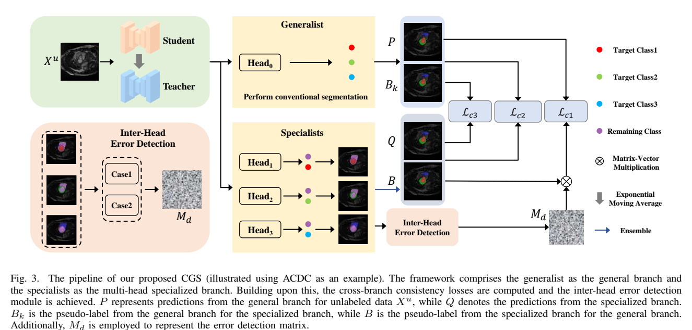

本篇未找到可可靠提取的方法流程图，请查看原文 PDF。
根管治疗是临床中精细且复杂的操作，其成功高度依赖医生经验与主观判断；根管系统形态复杂、个体差异大，微小遗漏可能导致治疗失败[p. 1]。深度学习在医学图像分割中进展显著，但牙科领域多数工作聚焦于完整牙齿的分割与分析，对牙齿内部根管结构关注较少，且缺乏公开的根管分割数据集与专用模型[p. 2]。作者据此构建第一磨牙根管CBCT数据集FMRC-2025，并针对标注成本高、无标注数据丰富的问题提出半监督学习网络CFC-Net[p. 1-2]。
作者指出现有半监督方法的三点不足：（1）教师网络缺乏自学习能力，学生出错时教师无法自我纠正，误差会累积；（2）现有方法主要在空间域学习特征，忽视频域信息，而根管目标小、富含高频细节（图1，[p. 1]）；（3）基于mix-up的方法用低不确定性块替换高不确定性块，虽能提升伪标签可靠性，却破坏新样本中病灶的结构完整性[p. 2]。
训练集含M个有标注样本与N个无标注样本（N≫M）。给定全频图像 EF∈R^{H×W×C}，先用小波变换（db2）分解，LL为低频分量LF，HL、LH、HH之和为高频分量HF[p. 6]。两个专用学生网络（SS）分别以LF、HF为输入，综合教师网络（CT）以EF为输入；三者结构相同。训练分三步（图4，[p. 5]）：先经CFC-MT完成第一阶段训练；再由不确定性图引导UCF-Mix生成混合样本；最后用新样本再次训练CFC-MT。测试阶段仅需CT网络[p. 5]。
总损失为 L = L_sup + λL_unsup，其中λ由高斯预热函数 λ(t)=λ_max·e^{-5(1-t/t_m)^2} 控制，t为当前迭代、t_m为总迭代数[p. 6]。
监督路径：对配对的LF、EF、HF分量使用同一标签训练三个网络，L_sup1 = Σ_i [L_seg(x_sl^i,y_i)+L_seg(x_sh^i,y_i)+L_seg(x_t^i,y_i)]，L_seg为交叉熵与Dice损失组合[p. 6-7]。
无监督路径：CT权重由两个SS网络的EMA组合更新：θ_t = αθ_{t-1} + β(1-α)θ_t^{sl} + (1-β)(1-α)θ_t^{sh}，α、β为平滑系数，分别控制EMA更新率与高低频学生网络的相对贡献[p. 6]。无监督损失 L_unsup1 = L_fcs + L_ccs。L_fcs用CT生成的伪标签同时监督两个SS网络（L_fcs = ½(L^{t→sl}_fcs + L^{t→sh}_fcs)），目的是从全频视角约束学生、抑制误差累积；L_ccs让两个SS互相生成伪标签进行双向监督（L_ccs = ½(L^{sl→sh}_ccs + L^{sh→sl}_ccs)），促进跨频知识交换、避免各自孤立学习[p. 6]。
先由三个网络输出计算联合概率 P = ⅓(Softmax(x_sl)+Softmax(x_sh)+Softmax(x_t))，再计算不确定性图 U = -Σ_c P_c·log(P_c+ε)[p. 7]。将U划分为k个块并排序，选取前25%高置信前景块进行双向混合：第一轮按 sl→t→sh→sl 顺序混合，得到LF1、EF1、HF1；第二轮按 sh→t→sl→sh 反向顺序混合，得到LF2、EF2、HF2[p. 7]。混合仅在同一位置的块之间跨频率进行，因此无需修改训练标签，从而保持目标结构完整性[p. 7]。新样本回灌CFC-MT进行第二阶段训练，两轮新样本各用于一次训练迭代；总损失为两阶段之和：L_sup = L_sup1+L_sup2，L_unsup = L_unsup1+L_unsup2[p. 7]。
作者声称的贡献有三点：（1）构建并标注FMRC-2025，称其为该领域首个且最大的数据集；（2）提出CFC-Net，有效利用频域信息、保持子网络差异、生成高质量伪标签并保持目标结构完整性；（3）在FMRC-2025与三个公开牙科数据集上验证性能与鲁棒性，并通过消融验证各组件[p. 2-3]。
我的解读：核心新颖点在于把“频率分量差异”同时用作子网络分歧来源与一致性监督对象，并用同位置跨频混合替代传统空间块替换，从而在引入频域信息的同时规避结构破坏；与UCMT（图2(b)，[p. 3]）相比，区别在于三个子网络学习不同频率分量、且UCF-Mix为跨频双向混合。
FMRC-2025含570个体积（235名患者，92男143女；46名≤18岁、130名19–40岁、59名>40岁，最大68岁），30名患者完全人工标注，其余为人机混合标注；每名患者左右各一个体积[p. 2, 4-5]。CTooth含22例标注、111例无标注，16例标注加全部无标注作训练、6例作测试[p. 7]。TDD含1000张2D全景X光片，按8:2随机划分[p. 7]。NKUT含133例，三类（双侧智齿牙胚MWT、第二磨牙SM、部分牙槽骨AB），FMRC-2025与NKUT均按8:2划分训练/测试[p. 7]。
实现细节：随机水平/垂直翻转与旋转增强；3D数据抽取2D切片训练；图像与标签统一缩放至256×256；UNet+VGG16骨干，编码器通道[64,128,256,512]；Adam优化器，初始学习率0.0001，poly衰减；UCMT因每迭代两步训练设150 epochs，CFC-Net总epochs为100，其他方法300；batch size 12（6标注+6无标注）；K=16，α=β=0.99，λ_max=0.1；损失为交叉熵+Dice；PyTorch，两块NVIDIA GeForce 3090；指标为MAE、Recall、DSC、IoU、HD95、ASD[p. 7]。
FMRC-2025（表1，[p. 8]）：20%标注下CFC-Net取得DSC 60.71、IoU 46.69、HD95 31.91、ASD 9.71，对比UCMT（60.51/46.52/32.36/10.34）、BCP（59.82/45.87/33.59/9.83）、ABD（59.26/45.62/33.34/10.92）；10%标注下为56.39/42.69/38.43/11.53，对比UCMT（56.08/42.39/39.80/12.91）。注意10%设置下ASD最优为BCP的15.33？不，BCP的ASD为15.33，数值更差；CFC-Net的ASD 11.53优于多数对比方法，但URPC为11.69、SASSNet为11.33，故CFC-Net在10%下ASD并非最优（SASSNet 11.33更小）。
TDD（表2，[p. 8]）：20%标注下CFC-Net为MAE 2.24、Recall 91.29、DSC 89.96、IoU 82.16；ABD为2.24/90.83/89.94/82.22，故IoU略低于ABD。10%标注下CFC-Net为2.34/89.84/89.11/80.97，UCMT为2.31/89.96/88.97/80.94，DSC与IoU略优、MAE与Recall略逊。
CTooth（表3，[p. 9]）：16例标注下CFC-Net为DSC 86.43、IoU 78.11、HD95 8.88、ASD 2.15，优于UCMT（86.08/77.68/9.61/3.51）；8例标注下为83.57/74.28/9.54/2.94，优于UCMT（82.97/73.37/9.79/3.39）。
NKUT（表4，[p. 10]）：20%标注下CFC-Net为81.06/74.73/20.21/5.91，优于UCMT（80.45/74.25/24.16/6.71）；10%标注下为79.48/73.14/25.91/8.69，优于UCMT（79.02/72.68/26.62/9.14）。
在FMRC-2025 20%标注下重复三次（表5，[p. 10]）：基线MT为59.13/45.29/35.89；仅CT+低频学生（单侧L_fcs）为59.49/45.35/34.71；加入高频学生并改为双向L_fcs为59.84/45.78/33.19；再加入L_ccs构成CFC-MT为60.08/46.16/33.05；加入UCF-Mix第一步为60.38/46.29/32.66；两步完整为60.71/46.69/31.91。该消融支持各组件逐步带来增益，尤其两阶段UCF-Mix优于单阶段。
支持的结论：在四个数据集、两种标注预算下，CFC-Net在多数指标上优于所列SOTA，且消融显示CT自学习、双频学生、L_ccs与两阶段UCF-Mix均有贡献。作者报告的局限与未来工作：计划扩大FMRC数据集规模并推进全口根管分割，继续优化分割精度与架构[p. 10]。
缺失或需谨慎之处：（1）FMRC-2025中仅30名患者完全人工标注，其余为人机混合标注，伪标签质量对基准的影响未量化；（2）表1中10%设置下CFC-Net的ASD（11.53）并非最优（SASSNet为11.33），作者“多数指标最优”的表述需按指标核对；（3）TDD上部分指标与ABD/UCMT接近或略低，优势幅度有限；（4）未报告参数量、推理时间、跨中心外部验证与标注者间一致性；（5）消融仅在FMRC-2025 20%标注下进行，未在其他数据集或10%预算下重复；（6）图5–8为定性结果，正文未给出可视化对应的定量误差分析。
已报告：数据划分（FMRC-2025与NKUT 8:2；CTooth 16/6与8/6；TDD 8:2）、2D切片训练、256×256输入、UNet+VGG16、编码器通道、Adam+0.0001+poly、epochs（CFC-Net 100，UCMT 150，其他300）、batch 12（6+6）、K=16、α=β=0.99、λ_max=0.1、交叉熵+Dice、两块3090、小波基db2、UCF-Mix取前25%高置信前景块、两轮混合顺序[p. 6-8, 10]。
未报告：具体数据增强概率与旋转角度范围、学习率poly衰减的具体幂次、EMA初始权重、伪标签阈值、K=16时块划分方式、随机种子、五次重复的方差/标准差、代码与数据集的获取时间（仅称将发布）。
本篇未找到可可靠提取的方法流程图，请查看原文 PDF。
论文针对半监督 3D 医学图像分割中的两个核心困难：极端类别不平衡（病灶体素远少于背景）和病理形态变化带来的高预测不确定性，导致一致性学习在病灶边界处不可靠 [p. 1]。作者指出，现有不确定性感知方法通常用 Monte Carlo dropout、深度集成、双解码器或子网络分歧来生成不确定性，再通过阈值过滤或差异掩码把高不确定体素排除在一致性损失之外 [p. 1–2]。作者认为这种做法有两个问题：其一，丢弃高不确定体素使一致性损失只作用于局部区域，无法利用全局影像上下文；其二，现有对比学习方法对所有样本对一视同仁，缺少对难正/负样本和不确定样本对的优先级，在高度不平衡数据上判别力有限 [p. 2]。
DyCON 被集成到 Mean-Teacher（MT）框架中以便展示，但作者声称该框架可与任意 SSL 框架结合 [p. 3]。教师网络 $f_\theta^t$ 是学生网络 $f_\theta^s$ 的指数滑动平均（EMA）。学生接收无标签增强视图 $x_j^s$ 与有标签输入 $x_i$，教师接收无标签增强视图 $x_j^t$。学生输出 logits $p^s$ 及有标签掩码 $p_i^s$，教师输出 $p^t$。一个 ASPP 模块加卷积层构成投影头 $h_\phi(\cdot)$，用于对比学习 [p. 3]。总损失为
$$L_{Total}=L_{Dice}+L_{CE}+\eta\cdot(L_{UnCL}+L_{FeCL})$$
其中 $\eta$ 控制无监督损失相对权重，论文设为 1.0 [p. 5–6]。
对同一输入的两个增强视图，分别得到学生概率 $p_j^s=\sigma(f_\theta^s(x_j^s))$ 和教师概率 $p_j^t=\sigma(f_\theta^t(x_j^t))$，$\sigma$ 为 softmax [p. 3–4]。UnCL 定义为
$$L_{UnCL}=\frac{1}{N}\sum_i \frac{L(p_i^s,p_i^t)}{\exp(\beta H_s(p_i^s))+\exp(\beta H_t(p_i^t))}+\frac{\beta}{N}\sum_i\big(H_s(p_i^s)+H_t(p_i^t)\big)$$
其中 $L(\cdot,\cdot)$ 为 MSE 距离，$H_s,H_t$ 为学生/教师预测的体素熵，$\beta$ 放大不确定性影响 [p. 4]。第一项是“反熵加权”的一致性对齐：当两个模型都高不确定时惩罚被压低，允许探索；当一方自信另一方不确定时惩罚相对放大；当双方都自信时强惩罚不一致。第二项是熵正则，作者称其防止模型过早坍缩到过度自信但可能错误的预测 [p. 4]。
$\beta$ 随训练动态变化：$\beta(t)=\max(\beta_{min},\beta_{max}\cdot\exp(-\lambda\cdot t/T))$，$t$ 为当前 epoch，$T$ 为总 epoch，$\lambda$ 为衰减率 [p. 4]。训练早期 $\beta$ 较大，强调不确定区域；后期 $\beta$ 减小，转向精修高置信区域。作者还给出 $L_{UnCL}$ 对 $p^s$ 的梯度公式（式 2），并称其说明 UnCL 在向教师学习的同时主动处理双方不确定性 [p. 4]。
FeCL 在学生的中间编码器特征 $F^s$ 上经投影头得到 $z^s=h_\phi(F^s)$，划分为 $k\times k\times k$ patch 并平均池化，得到 $z_i^s\in\mathbb{R}^{N\times h\times w\times d}$，嵌入维度 $N=256$；GT 也按 patch 平均得到 $y_i^s\in\mathbb{R}^{k^3}$，用于定义正负对 [p. 4]。FeCL 在 SupCon 基础上改写为
$$L_{FeCL}=\frac{1}{|P(i)|}\sum_{k\in P(i)}F_k^+\cdot\left[-\log\frac{\exp(S_{ik})}{D(i)}\right]$$
$$D(i)=\exp(S_{ik})+\sum_{q\in N(i)}F_q^-\cdot\exp(S_{iq})+\frac{1}{K}\sum_{l=1}^{K}\exp(S_{il})$$
其中 $S_{ik}=z_i^s\cdot z_k^s/\tau$ 为相似度，$\tau=0.6$，$P(i)$ 与 $N(i)$ 分别为锚点 $i$ 的正/负对集合 [p. 5–6]。
三个关键机制：
作者声称的贡献有三点：提出 DyCON 框架，把不确定性感知同时融入全局与局部学习；提出 UnCL，用熵缩放体素贡献且不丢弃高不确定区域；提出 FeCL，通过双焦点、熵加权和难负样本挖掘增强不平衡区域的局部判别 [p. 2]。
我的解读：UnCL 的核心并不是全新的不确定性估计，而是把“熵加权一致性 + 熵正则 + 动态 β”组合成一个单次前向即可计算的损失，避免 MC dropout 或集成带来的多次推理；FeCL 的核心是把 SupCon 的均匀权重替换为按相似度和熵调制的权重，并引入教师特征作为难负样本来源。两者都属于对现有一致性/对比学习目标的重新加权，而非新的网络结构或训练范式。
四个数据集：ISLES'22（250 例多通道 MRI，仅用 DWI，200/50 训练/测试验证划分）、BraTS'19（335 例 MRI，用 T2-FLAIR 做全肿瘤分割，250/25/60 划分）、LA（100 例 3D 钆增强 MRI，分辨率 0.625×0.625×0.625 mm³）、Pancreas-NIH（82 例 3D CT）[p. 5]。标签比例统一为 5%、10%、20%，其余为无标签 [p. 5]。骨干为 3D UNet，ASPP 作投影头；patch 尺寸 LA 为 112×112×80，Pancreas 与 BraTS 为 96×96×96，ISLES'22 为 96×96×64；SGD，学习率 0.01，动量 0.9，权重衰减 1e-4，6000 次迭代，batch size 8；单张 A100 80GB [p. 5–6]。评价指标为 Dice、IoU、HD95、ASD，均基于学生网络输出，结果取 3 折交叉验证平均 [p. 5–6]。
ISLES'22（Table 1）：5% 标签下 DyCON Dice 61.48%、HD95 17.61、ASD 0.75，对比 BCP 53.53%、GALoss 53.29%；10% 标签下 Dice 65.71%、HD95 13.35、ASD 0.71，对比 GALoss 60.13%、BCP 57.97%；20% 标签下 Dice 69.11%、HD95 10.58、ASD 0.52，对比 BCP 60.35%、MagicNet 58.84% [p. 6]。作者称这是首个在 ISLES'22 上应用 SSL 的工作 [p. 6]。
BraTS'19（Table 2）：10% 标签下 DyCON Dice 87.05%、IoU 77.73%、HD95 7.41、ASD 1.14，对比 CML 85.26%、HD95 9.08；20% 标签下 Dice 88.75%、IoU 80.52%、HD95 6.33、ASD 0.93，对比 CML 86.63%、HD95 7.83 [p. 6]。
LA（Table 3）：5% 标签下 DyCON（3D-UNet）Dice 90.96%、HD95 5.39、ASD 1.91；DyCON（VNet）Dice 91.18%、HD95 5.16、ASD 1.39；10% 标签下 3D-UNet 版 Dice 92.77%、HD95 4.20、ASD 1.23，VNet 版 Dice 91.58%、HD95 5.02、ASD 1.52 [p. 7]。作者以此说明方法对骨干不敏感。
Pancreas-NIH（Table 4）：20% 标签下 DyCON Dice 84.81%、IoU 73.86%、HD95 5.41、ASD 1.44，对比 BCP 82.91%、HD95 6.43 [p. 7]。
UnCL 消融（Table 5）：在 ISLES'22 10% 标签下，MT 基线 Dice 36.43%、HD95 21.80；加 UnCL 但无 β 为 58.78%、HD95 19.37；固定 β=0.5 为 60.97%、HD95 16.89；β=0.8 为 62.23%、HD95 15.18；自适应 β 为 64.52%、HD95 14.10、ASD 1.05。BraTS'19 10% 下对应为 81.70→80.04→83.11→84.12→85.97 [p. 7]。作者据此认为自适应 β 在所有场景最优。
FeCL 消融（Table 6，10% 标签）：ISLES'22 上 MT+SupCon 基线 Dice 38.24%、HD95 20.16；加双焦点（F++F−）与 UnCL 后 63.78%、HD95 13.94；再加 top-k 难负样本 64.39%、HD95 13.76；再加熵感知 65.46%、HD95 13.52；三者全加 66.07%、HD95 13.34、ASD 0.75。BraTS'19 对应从 82.68% 升到 86.97%、HD95 从 21.53 降到 7.46 [p. 8]。
FeCL 敏感性分析：ISLES'22 测试集按病灶体积分小（12 例）、中（3 例）、大（7 例），按空间分布分散在（73%）与非散在（27%）。10% 标签下，FeCL 对小病灶 Dice 54.77% vs SupCon 47.77%，对散在病灶 70.71% vs 65.36%，且 HD95/ASD 更低 [p. 8]。
可视化证据：Fig. 3 展示 UnCL 训练中熵图逐渐下降并集中于病灶；Fig. 5 展示不同 β 的 batch 梯度幅度；Fig. 6 的 Grad-CAM 显示模型从 epoch 100 的宽泛激活收敛到 epoch 400 的精确病灶定位；Fig. 8 展示 DyCON 减少散在病灶的假阳/假阴 [p. 4, 7, 8]。这些均为作者提供的定性证据，正文未给出对应定量统计。
支持的结论：在作者报告的设置下，DyCON 在四个数据集、多个标签比例上一致优于所列 SSL 基线，且 UnCL 与 FeCL 的消融显示各组件逐步带来 Dice 提升和 HD95/ASD 下降。自适应 β 优于固定 β 和无 β 的结果在 Table 5 中有直接数字支持 [p. 7]。
需要注意的问题：
已报告：3D UNet 骨干 + ASPP 投影头；MT/EMA 框架；MSE 一致性；SGD lr=0.01、momentum=0.9、weight decay=1e-4、6000 iterations、batch size=8；patch 尺寸按数据集分别为 112×112×80、96×96×96、96×96×64；η=1.0，βmax=1.0，βmin=0.1，λ=0.1（ISLES'22）/0.3（其他），τ=0.6，k=16，γ=0.5（ISLES'22）/0.8（其他）；3 折交叉验证；单张 A100 80GB [p. 5–6]。
未报告或无法从文本确认：EMA 衰减系数、优化器是否对教师/学生分别设置、数据预处理的归一化细节、增强的具体参数、Gumbel-Softmax 的温度 $T$ 取值、top-k 中 $K$ 的具体数值、对比损失中 patch 数 $k^3$ 与嵌入维度 256 之外的头结构、以及 Table 1/2 中部分基线的标签比例归属 [p. 4–6]。复现时应优先以作者项目页和补充材料为准，正文缺失项需标注为未报告。
本篇未找到可可靠提取的方法流程图，请查看原文 PDF。
半监督医学图像分割（SSMIS）希望用少量专家标注加大量未标注数据逼近全监督性能，一致性学习是主流路线之一：对同一输入施加不同扰动，约束预测一致[p. 1]。作者指出关键矛盾在于扰动强度：扰动过强会放大预测不确定性、破坏稳定表征，尤其在标注数据很少时；同时小标注集与未标注集之间存在分布不匹配，易造成误差传播[p. 1]。
作者以BCP和ABD为直接对照。BCP在标注/未标注图像间交换前景与背景块，但混合伪标签可能传播不可靠预测的错误；ABD在弱/强增强图像间双向替换低置信块与高置信块，但其“刚性”块替换机制忽略细微上下文依赖、适应性有限[p. 1–2]。CAD的目标是让替换过程随训练由小到大、由保守到激进地自适应推进[p. 2]。
输入为3D体数据X∈R^{W×H×L}，目标是逐体素标签图Y，共K类；训练集D=D_l∪D_u，N≪M[p. 2]。框架（图2，[p. 4]）包含三部分：
图像被划分为h×w个patch，共N_p=h×w个；patch p_i的置信度C_{p_i}为该patch内所有像素最大类概率α(x)的均值[p. 3]：
随后以最低置信patch p0为起点做BFS（算法1，[p. 3]）：用最小堆按C̃排序，仅当C̃_p≤C_threshold且|R_low|<R_threshold时把邻居加入区域，输出最大低置信连通区域R_low。区域用相对左上角的偏移(Δr,Δc)描述（式6）。在另一张置信图上枚举同形状候选区域R_c，计算平均置信度C(R_c)（式7），取最大者R_high=argmax C(R_c)（式8），最后把R_low的patch替换为R_high对应patch[p. 3–4]。
两个阈值随迭代t单调上升（式9）：
动机是训练早期预测不可靠，应只替换最不确定的小区域以保证稳定；后期模型更自信，阈值升至C_max、R_max，允许更大范围替换[p. 4]。
总损失由三部分组成[p. 4–5]：
两个学生总损失分别为L1=L_MT1+L_CPS1+L_CAD1、L2=L_MT2+L_CPS2+L_CAD2，最终L=L1+L2（式18–20）[p. 5]。
作者声称的贡献有三点[p. 2]：提出LLCR，动态替换低置信区域；提出DTE，随训练自适应调整置信阈值与替换区域大小；在公开数据集上取得SOTA。
我的解读：CAD本质上是ABD的“渐进式+连通区域化”改造——把ABD的固定块级双向替换改为由BFS找最大连通低置信区、并让阈值随训练爬升。新颖性主要在调度策略与区域选择方式，而非全新的学习范式；其有效性高度依赖Mean Teacher+CPS+BCP式框架的组合。
5%标注（3例标注/67例未标注）：CAD的DSC 88.02、Jaccard 79.79、95HD 1.55、ASD 0.48；ABD为87.98/80.12/1.89/0.74，BCP为87.59/78.67/1.90/0.67，SCP-Net为87.27/–/–/2.65[p. 7, Table I]。作者称CAD在DSC、95HD、ASD上优于基线，但Jaccard略低于ABD（79.79 vs 80.12），文中未专门讨论该点。
10%标注（7例/63例）：CAD的DSC 90.38、Jaccard 82.89、95HD 1.24、ASD 0.36，四项均优于ABD（89.77/81.88/1.77/0.49）、BCP（88.84/80.62/3.98/1.17）、SCP-Net（89.69/–/–/0.73）等[p. 7, Table I]。作者称95HD相对提升42.7%，但该数字对应的比较基准在正文中未明确说明，无法从表中直接复算确认。
20%标注（7例/28例）：CAD的DSC 79.80、ASD 2.01；ABD为77.52/2.23；BCP、CorrMatch、SCP-Net、SLC-Net、SS-Net、URPC、CCT、U-Net的数值在Table II中因排版错乱无法可靠辨认[p. 7, Table II]。作者称在DSC上达到SOTA，但表中其他方法的完整数值不可读，无法独立核验。
ACDC 10%标注下[p. 7, Table III]：
该消融说明LLCR与DTE各自带来增益，DTE的加入贡献更大；KL式高置信区域选择在CAD框架内无正收益。
阈值超参消融（Table IV，[p. 7]）因排版错乱，各行对应的C_min/C_max/R_min/R_max与指标数值无法可靠对齐；正文仅称C_min=0.01、C_max=0.75、R_min=1、R_max=16时最佳[p. 6–7]。
有支持的结论：在ACDC 10%与5%、PROMISE12 20%的设定下，CAD相对ABD在多数指标上有提升，且消融显示LLCR与DTE均有正贡献。
局限与缺失证据：
已报告：V100环境；patch 16×16、每图256 patch；C_min=0.01、C_max=0.75、R_min=1、R_max=16；Ψ(t)=1−e^{−t/β}；基于BCP的Mean Teacher双学生+CPS；损失为Dice+CE的MT损失、CPS损失与CAD损失之和；ACDC按70:10:20划分，5%/10%标注；PROMISE12用20%标注[p. 5–6]。
未报告：β、训练迭代数、学习率与优化器、batch size、EMA动量、K_top、数据增强具体形式、BFS的邻域定义（6邻域或8邻域）、推理时是否用教师模型、代码（作者称发表后释放）[p. 1, p. 6]。复现时这些均需自行设定或向作者确认。
原论文流程图 · Figure 3 · PDF 第 4 页

Fig. 3. The pipeline of our proposed CGS (illustrated using ACDC as an example). The framework comprises the generalist as the general branch and thespecialistsasthemulti-headspecializedbranch.Buildinguponthis,thecross-branchconsistencylossesarecomputedandtheinter-headerrordetection moduleisachieved.P representspredictionsfromthegeneralbranchforunlabeleddataXu,whileQdenotesthepredictionsfromthespecializedbranch. B k isthepseudo-labelfromthegeneralbranchforthespecializedbranch,whileB isthepseudo-labelfromthespecializedbranchforthegeneralbranch. 原文来源
论文关注多目标半监督医学图像分割（multi-target SSMIS）。作者指出，现有SSMIS方法多针对单目标设计，同时分割多个器官/组织时性能明显下降，原因被归结为类别不平衡中的“尺度不平衡”：大目标在损失中占主导，小目标易被误分为大目标或背景。作者区分了“出现不平衡”（类别出现频率不均，如VOC）与“尺度不平衡”（类别出现频率较均衡但目标尺寸差异大，如SegTHOR），并认为医学图像中多器官常同时出现，因此尺度不平衡更关键；现有面向自然图像的不平衡方法不直接适用[p. 1][p. 2]。作者还指出，全监督下充足标注可缓解该问题，但半监督场景无法实现[p. 2]。
整体为教师-学生弱到强一致性框架，含两个分支：通用分支（generalist）与多专科头分支（specialists）。图3给出流程[p. 4]。
通用分支。 学生网络F对弱增强标注数据、强增强无标注数据分别输出 P_lw、P_us；教师网络F̂对弱增强无标注数据输出 P̂_uw，并生成伪标签。监督损失 L_sup=H(P_lw,Y_l)，无监督损失 L_u=1(max(P̂_uw)>τ)H(P_us,argmax(P̂_uw))，其中H为交叉熵加Dice，τ为置信阈值[p. 4]。
专科分支与标签重定义。 对第k个专科头，原始标签Y∈{0,…,K}被重定义为Z^i∈{0,1,2}：0为背景，1为目标类i，2为其余类。每个专科头只区分“目标类/其余类/背景”，因此第i类会作为“其余类”参与其他K−1个头的训练。每个头前加一个projector（卷积+BN+ReLU）以增加分支多样性；第k个头输出 Q_lk,w、Q_uk,s，教师对应输出 Q̂_uk,w[p. 5]。专科分支的监督与无监督损失为 L_MHsup=1/K Σ H(Q_lk,w,Z_lk)，L_MHu=1/K Σ 1(max(Q̂_uk,w)>τ)H(Q_uk,s,argmax(Q̂_uk,w))[p. 5]。
理论分析。 设第i类在前景中占比p_i，Σp_i=1。常规训练下各类参与比例为p_1,…,p_K；CGS下第i类总参与比例p′_i满足 |p′_i−1/K|≤|p_i−1/K|，且等号仅在p_i=1/K时成立，即训练参与更均衡[p. 5][p. 6]。作者据此主张CGS缓解尺度不平衡。
跨分支一致性。 双向一致性：L_c1=H(P_us,B)，L_c2=1/K Σ H(Q_uk,s,B_k)，其中B为专科分支集成伪标签，B_k为通用分支给第k个专科头的伪标签。共识一致性：在兩分支预测一致的掩码M_C区域上计算 L_c3=M_C⊙H(P_us,A)+1/K Σ M_C⊙H(Q_k,us,A_k)，A为专科分支集成伪标签。总一致性 L_c=L_c1+L_c2+L_c3，总损失 L=L_sup+L_MHsup+λ(L_u+L_MHu)+L_c[p. 6]。
IHED。 利用头间关系：某像素属于第k类，当且仅当第k个头判为目标类、其余K−1个头都判为“其余类”；或所有头都判背景。据此构造错误检测矩阵M_d，更新伪标签 B′=M_d⊙B，以过滤误识别像素[p. 7]。
推理。 训练时在UNet上增加K个轻量专科头；收敛后专科头与通用分支混合结果接近，故推理可丢弃专科头，不增加推理内存与时间[p. 7]。
作者主张的贡献：首次研究多目标SSMIS中的尺度不平衡；提出通用分支+多专科头的协同训练框架，推理不增加参数；提出IHED提升伪标签质量；引入双向与共识一致性损失[p. 2][p. 3]。我的理解：核心是把one-vs-rest式专科头作为“重加权/重平衡”机制，并用理论比例分析支撑；IHED是利用头间互斥结构做伪标签一致性过滤，属于无需额外标注的自监督信号。
数据集与划分。 ACDC为三目标（右心室、左心室、心肌），100例，按7:1:2划分训练/验证/测试，图像resize到224×224[p. 7]。SegTHOR为四目标（心脏、主动脉、气管、食管），训练/验证/测试为28/4/8个体积，转2D切片并resize到224×224[p. 7]。Synapse为8个腹部器官，按18/12例训练/测试，切片resize到224×224[p. 7]。
训练设置。 PyTorch，单张NVIDIA RTX 2080Ti（11 GB），SGD，momentum 0.9，weight decay 0.0001；backbone为UNet加专科头，推理等价UNet；batch size 24（12标注+12无标注切片）；λ采用ramp-up，最大2.0；τ=0.9；训练30000次迭代；初始学习率0.01；弱增强为裁剪、旋转、翻转，强增强为颜色抖动与CutMix，CutMix概率ACDC/SegTHOR为1.0、Synapse为0.5；ACDC参数量1.8160M，UNet为1.8138M（增加0.12%）[p. 8]。
主要结果。 ACDC 5%标注：CGS DSC 88.83±0.14、Jaccard 80.62±1.36、95HD 2.42±0.08、ASD 0.66±0.07；10%标注：89.83±0.11、82.11±1.64、2.08±0.07、0.68±0.04。作者称在DSC、Jaccard、ASD上超过所有SOTA，95HD略逊于BCP（BCP 5%为1.90、10%为3.98）[p. 7]。SegTHOR 10%标注：DSC 81.74±1.29、Jaccard 71.66±3.14、95HD 6.46±0.14、ASD 2.05±0.09；20%标注：83.69±1.45、74.52±2.57、5.09±0.11、1.79±0.10，作者称所有指标领先[p. 8]。Synapse 3个标注体：DSC 60.20±0.37、Jaccard 61.40±1.04（原文表格该列数值与DSC关系需核对，按原文照录）、95HD 82.36、ASD 32.00；作者称在DSC和HD95上超过SOTA，右肾等困难目标优势明显[p. 8][p. 9]。与SAM类方法比较，AutoSAM和SAM Adapter在Synapse上DSC仅55.69和28.28[p. 9]。
消融。 在ACDC 5%与SegTHOR 10%上：基线87.27/79.38；加BSH为87.74/79.56；BSH+Lc为87.89/80.24；SSH为87.79/80.32；SSH+Lc为88.36/81.19；SSH+IHED为88.17/80.65；SSH+Lc+IHED为88.83/81.74[p. 9]。作者说明IHED与Lc均依赖SSH，无法独立消融。τ在0.9最优[p. 10]。去掉CutMix后仍优于FixMatch[p. 10]。作为插件用于CPS：ACDC 5%从73.51提升到75.83，SegTHOR 10%从77.62提升到79.15；用于MT：ACDC从50.30到53.21，SegTHOR从68.48到70.73[p. 10]。与4个种子训练的generalist集成（Avg./Conf./Vot.）比较，CGS仍更优[p. 11]。TransUNet backbone下仍优于FixMatch[p. 11]。推理时混合专科分支与通用分支不同比例不影响结果，支持丢弃专科头[p. 11]。Synapse上重采样（RS）可改善出现不平衡类别，CGS+RS平均DSC 64.93，高于CGS 60.20和FixMatch+RS 59.06[p. 12]。
支持的结论：在三个数据集、多个标注预算下，CGS多数指标优于所列SOTA；消融逐步增益支持SSH、Lc、IHED各自有效；插件实验支持方法可迁移到CPS/MT；推理无额外参数有实验支持。局限与缺失证据：理论分析只针对训练参与比例，未直接证明泛化误差或分割精度上界；IHED与Lc无法独立消融，二者耦合贡献不清；部分表格（如SegTHOR、Synapse完整表）在文本中排版混乱，个别数值难以逐项核对；未报告多次运行的显著性检验；未报告推理时间具体数值；Synapse的Jaccard列与DSC列关系异常，需以原文表格为准，不能据此推断。作者也承认未来需同时处理出现不平衡与尺度不平衡[p. 11][p. 12]。
按原文可复现的步骤：采用UNet教师-学生框架；对标注数据弱增强，对无标注数据弱/强增强；教师EMA更新；按式(3)(4)计算通用分支监督与无监督损失；对每个目标类重定义标签为{背景,目标,其余}，加K个projector+专科头，按式(9)计算专科损失；按式(11)(12)计算L_c1、L_c2、L_c3；按IHED规则构造M_d并修正B；总损失式(14)，λ ramp-up至2.0，τ=0.9，训练30000迭代，SGD lr=0.01、momentum=0.9、weight decay=1e-4，batch 24（12+12），CutMix概率ACDC/SegTHOR 1.0、Synapse 0.5；推理仅保留通用分支。未报告细节：教师EMA衰减率、projector具体通道数、专科头卷积核设置、λ ramp-up曲线、数据划分随机种子、测试时是否用3D后处理、95HD/ASD的具体实现库，以及部分表格的完整数值。
本篇未找到可可靠提取的方法流程图，请查看原文 PDF。
论文针对混合域半监督医学图像分割（MiDSS）：仅有少量标注数据来自单一域，大量无标注数据来自多个混合域，且域标签未知[p. 1][p. 2]。作者指出，传统U-Net从零训练在域偏移下容易过拟合标注域，伪标签噪声大；而MedSAM等基础模型虽泛化强，却因大规模预训练而倾向于产生高置信错误预测，这些错误难以被纠正并导致误差累积[p. 1][p. 2]。图1显示：标注来自BIDMC时U-Net早期差、MedSAM较好；标注来自HK时MedSAM无法纠正高置信错误，而U-Net能主动纠正高不确定性错误，达到更高上限[p. 1][p. 2]。作者据此认为两种模型互补，而非让基础模型单方面主导[p. 2]。
采用Mean Teacher：教师ˆf由学生f的EMA更新。对无标注数据U做弱/强增广得Uw、Us；教师预测ˆPw并取argmax得伪标签ˆQw。为桥接域差，用单中心mask M将弱增广标注Xw粘贴到Us上生成中间样本Uc，伪标签同步混合：Uc = Xw⊙M + Us⊙(1−M)，ˆQc = Yw⊙M + ˆQw⊙(1−M)[p. 3, Eq.1]。
MedSAM记为fMS，U-Net记为fUT。融合伪标签为ˆP_EN_w = αˆP_UT_w + (1−α)ˆP_MS_w[p. 4, Eq.3]。α可选常数0.5、CPS、线性t/tmax，或本文的自互置信SMC：α = Φself × Φmut[p. 5, Eq.6]。Φself衡量U-Net学生与教师预测的逐类IoU式一致性[p. 4, Eq.4]；Φmut衡量U-Net教师与MedSAM教师预测的一致性[p. 5, Eq.5]。融合后经Eq.1生成Uc及ˆQ_EN_c，无监督损失为带高置信mask W_EN_c = 1(max(ˆP_EN_w) ≥ τ)的CE+Dice，τ=0.95[p. 5, Eq.7]。
比较两学生模型在强增广样本上的预测：一致区域Mc = 1(Q_UT_s = Q_MS_s)，分歧区域Md = 1−Mc[p. 5, Eq.8]。一致区域最小化Shannon熵以鼓励高置信低熵预测（Eq.9）；分歧区域最小化两模型预测的MSE以对齐表征（Eq.10）[p. 5]。总损失Ltotal = Lx + λ(Lu + Lc + Ld)，λ(t)=e^{−5(1−t/tmax)}[p. 4, Eq.2]。
MedSAM采用ViT-B，输入512×512，LoRA rank=4，仅训练图像编码器与mask decoder并参与EMA[p. 4][p. 6]。U-Net用SGD（momentum 0.9，weight decay 1e-4，lr 0.03）；MedSAM用AdamW（lr 1e-4，β1=0.9，β2=0.999，weight decay 0.1）[p. 6]。Prostate/Fundus用20标签，M&Ms用5标签，BUSI用64(1/8)或129(1/4)标签；batch size除M&Ms为4外均为8，标注与无标注各半；迭代次数Prostate/M&Ms为60k，Fundus/BUSI为30k[p. 6]。
作者声称的贡献：识别基础模型高置信错误累积问题；提出SMC按自稳定与互一致确定伪标签融合比例；提出CDCR同时鼓励高置信可靠预测并对齐表征；在四个公开多域数据集上验证SOTA[p. 2]。我的解读：核心创新是把“基础模型主导”改为动态主导权交接，并用两个置信度指标实现实例级、非手工的α调度；CDCR则是对一致/分歧区域施加不同约束，属于对协同训练过程的细粒度正则化。
数据集：Prostate（6域，384×384）、Fundus（4中心，256×256）、M&Ms（4厂商，288×288）、BUSI（良/恶性两域，256×256）[p. 5][p. 6]。指标为DSC、Jaccard、95HD、ASD[p. 6]。
Prostate（20标签）：SynFoC-MedSAM平均DSC 87.16、Jaccard 79.30、95HD 10.26、ASD 4.41；次优SymGD为76.85 DSC，作者称提升10.31%[p. 6, Table 3]。SynFoC-U-Net为86.90 DSC[p. 6]。
Fundus（20标签）：SynFoC-MedSAM平均DSC 88.60、Jaccard 80.50、95HD 6.56、ASD 3.47；CPC-SAM为76.79 DSC[p. 6, Table 4]。
M&Ms（5标签）：SynFoC-MedSAM平均DSC 80.84、Jaccard 70.94、95HD 8.15、ASD 3.65；CPC-SAM为76.81 DSC，作者称提升2.14%[p. 7, Table 5]。
BUSI：64标签（1/8）下SynFoC-MedSAM平均DSC 71.61，较次优CPC-SAM 68.87提升2.74%；129标签（1/4）下74.75，较CPC-SAM 72.57提升2.18%[p. 7, Table 6]。
消融（Prostate 20标签）：Base（仅U-Net）DSC 75.12；加SMC后84.89；加CDCR后87.51；SMC+CDCR达87.16（表中SMC行与最终行数值接近，原文表格排版存在可读性问题）[p. 8, Table 7]。不同α策略：常数0.5为82.45，CPS为82.46，线性为84.64，仅自置信82.99，仅互置信83.36，SMC 84.89[p. 8, Table 8]。τ消融：0.85/0.90/0.95/0.98/0.99对应DSC 86.71/87.08/87.16/86.68/86.62，0.95最优[p. 10, Table 11]。优化器消融：U-Net SGD + MedSAM Adam最优（87.16），两者均Adam为87.01，均SGD为76.56[p. 10, Table 10]。
补充：与精确bbox提示MedSAM（77.39 DSC）和全微调MedSAM（81.78 DSC）相比，SynFoC 87.16更高[p. 10, Table 9]。ACDC SSMIS（5%标签）SynFoC DSC 88.32，BCP 87.59；10%标签89.68 vs ABD 89.81[p. 11, Table 13]。MS-CMRSeg UDA：CT→MRI平均79.06，MRI→CT 83.16，均优于UDA-VAE++[p. 11, Table 14]。
支持的结论：SMC与CDCR各自带来明显增益，组合后最佳；SMC优于常数、CPS、线性及单一置信度策略；τ=0.95稳定；协同训练优于单独U-Net或MedSAM，且优于冻结基础模型引导的SemiSAM[p. 8][p. 10]。作者报告的局限：极小目标易过/欠分割（M&Ms误差案例），仅探索2D，未做3D[p. 11]。缺失证据：未报告多随机种子方差与显著性检验；Table 7/8排版在PDF文本中部分数字错位，需谨慎核对；未给出SMC计算开销的定量分析；未报告跨数据集超参敏感性。
已报告：U-Net SGD lr0.03/momentum0.9/wd1e-4；MedSAM ViT-B + LoRA rank4，AdamW lr1e-4/wd0.1；输入512×512，输出128×128后插值对齐；τ=0.95；λ(t)=e^{−5(1−t/tmax)}；各数据集标签数与迭代数、batch size如2.4节[p. 4][p. 5][p. 6]。未报告：EMA衰减率、强/弱增广具体算子、LoRA应用的具体层、随机种子数、学习率调度、验证集选择准则、SMC中Φself/Φmut的平滑或裁剪细节。复现时应先按上述设置搭建Mean Teacher双模型，再实现Eq.1中间样本生成、Eq.3-6融合权重、Eq.7无监督损失与Eq.9-10区域正则，最后在Prostate 20标签上核对DSC约87。